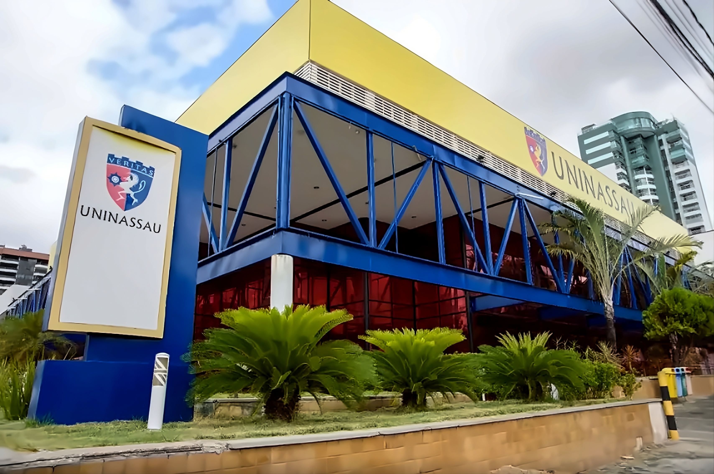

13
NOVEMBRO
“Conhecimento que conecta pessoas e transforma realidades”
Dois dias de ciência, extensão e troca de experiências: apresentações de trabalhos que aproximam a academia da sociedade.
Acompanhe as novidades: @vi_jornadaacademicauninassau
A 6ª Jornada Acadêmica da Uninassau Teresina acontece nos dias 09 e 10 de dezembro de 2026, com o tema “Conhecimento que conecta pessoas e transforma realidades”.
A Jornada integra a estratégia de ampliação das atividades acadêmicas internas e externas da Uninassau Teresina, com o objetivo de ampliar e intensificar a inserção da instituição na comunidade científica local e elevar o padrão da formação acadêmica, em total ligação com a sociedade.
O evento é um espaço privilegiado para dar visibilidade às atividades de extensão realizadas, além de outros trabalhos científicos. Seu propósito é estimular a produção de conhecimento, a formação de recursos humanos e a troca de experiências entre os alunos das diversas áreas dos cursos de graduação da unidade.

O dia e o horário de cada apresentação serão divulgados em 05/12/2026, na rede social do evento.
Edital publicado em Teresina, em 13 de novembro de 2026, pela Comissão Organizadora.
Inscreva seu trabalho pelo site, sem taxa.
Divulgados nas redes sociais do evento.
Uninassau Teresina — PI.
Pelo site do evento, a partir desta data.
Além de estimular a produção científica, a 6ª Jornada Acadêmica é uma oportunidade de exercer a responsabilidade social. Pedimos que cada aluno participante contribua com a doação de 1 kg de alimento não perecível.
A doação é recebida no momento do credenciamento e será entregue a uma instituição de trabalho social reconhecida.
A inscrição é gratuita e vai de 16 a 30 de novembro. Cada trabalho deve ser inscrito apenas uma vez, por um representante do grupo.
O certificado de participação fica disponível na área Certificados, a partir de 14/12, após a validação.
Enviamos este QR Code para o seu e-mail! Você também pode tirar print desta tela para apresentar à organização:
Todas as normas e novidades da Jornada são divulgadas neste site e no Instagram @vi_jornadaacademicauninassau.